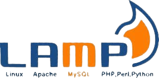
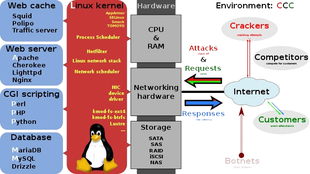
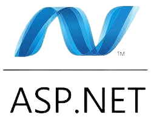
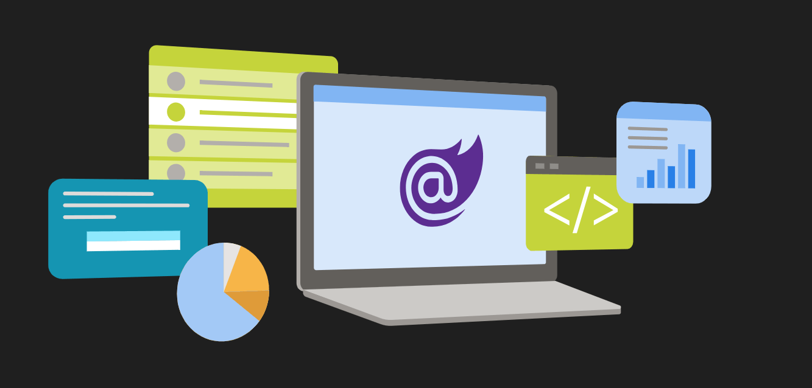
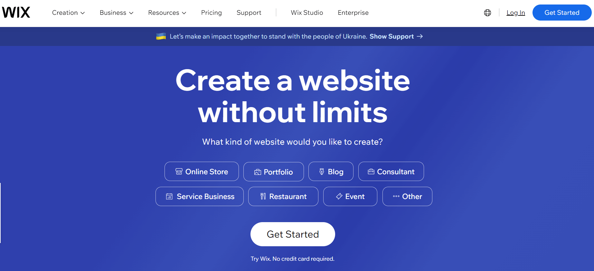
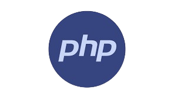
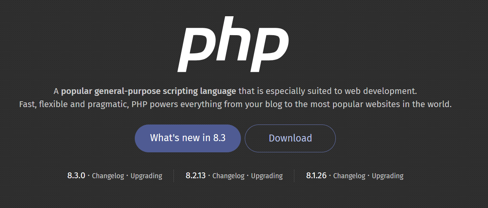
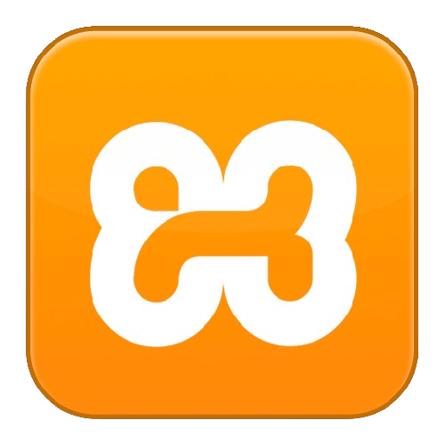
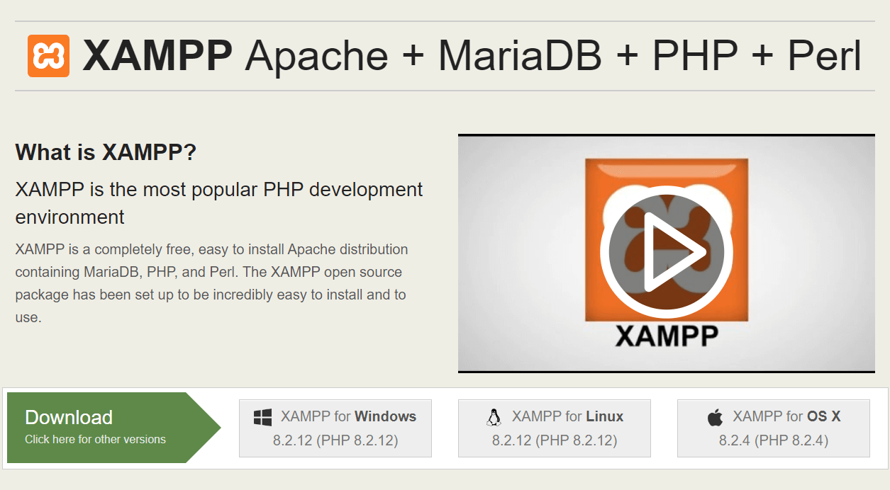

LAMP
(software bundle)


A high-level overview of LAMP's building blocks and overall system environment
Monday
Work Mgt.
 Assign tasks, collaborate, and notify teammates on status changes - all in real-time. Close the feedback loop, faster.
Assign tasks, collaborate, and notify teammates on status changes - all in real-time. Close the feedback loop, faster.
ASP.NET Core


Blazor gives you real .NET running in the browser on WebAssembly.
WIX.com

Try Wix. No credit card required.
PHP


PHP 8.3 comes with numerous improvements and new features
XAMPP


XAMPP has been around for more than 10 years - there is a huge community behind it.